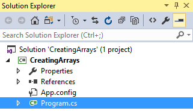

Duration
10 minutes
Lab goals
In this exercise, you will create an array of integers, fill it with data, and display it to the user. If you use the lab instructions, your UI will look something like:

Required Assets
The provided Resources folder for this part contains a subfolder named Start with a solution you will use as starter code. The Completed subfolder contains a completed project you can use to check your work.
Steps
This is a individual exercise. Use the step-by-step instructions below to complete the project.
Declaring and Assigning Arrays
You are going to write a program where you declare, load, and display an array.
- Launch either Visual Studio (Windows or Mac OS X) or Visual Studio (Windows) and open the CreatingArrays solution file in the Resources/Start folder.
- Open the Program.cs file located in the CreatingArrays project. 
-
The
Mainmethod contains threeTODOcomments which are where your work will be done. -
Your first step is to create an array of five (5) integers. Check the slides for the syntax on creating an array - remember
that you must supply the length of the array as part of the
newstatement. Create the array just below the firstTODOcomment. -
When you allocate an array of integers, all the elements are initialized to zero automatically.
However, you want to populate it with your own values, so that's your next step.
Assign each element in the array a new integer value. Remember that the first element in an array starts with index 0.
The lab solution and sample code will use the values 10,45,67,34,55 but you can select any values you like.
Place code just below the second
TODOcomment. -
Your last step is to display the array elements to the console. Since the size of the array could be anything we should use a loop to iterate through the array and print out all elements.
You can use a
fororforeachloop depending on what you're more comfortable with.